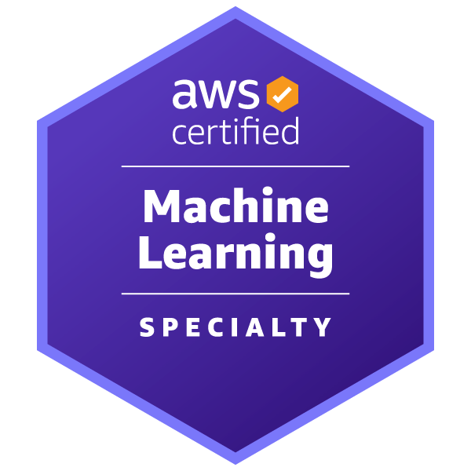
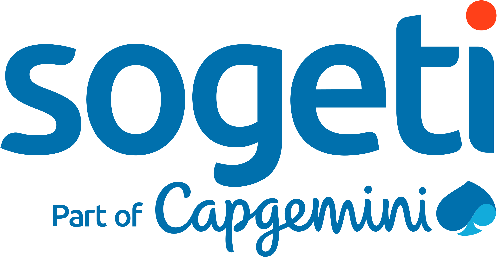
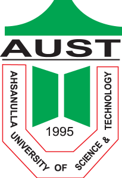
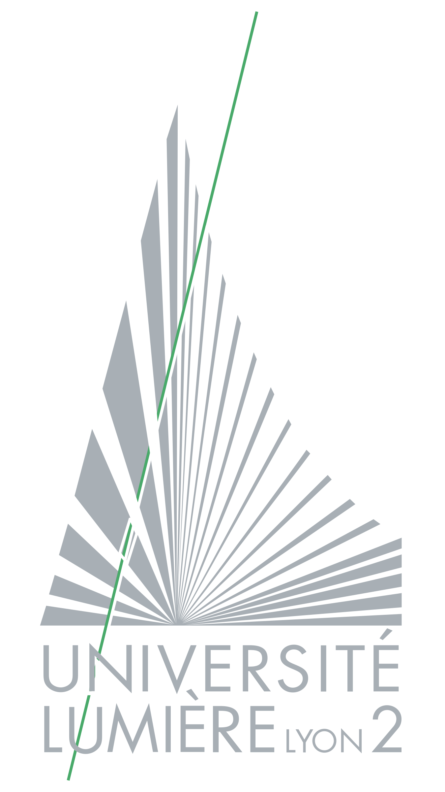
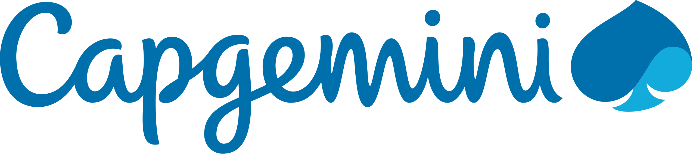
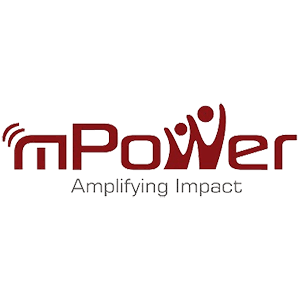
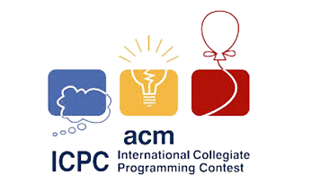

M.S. Rahman, U. Aktar, M.R. Jani, S. Shatabda. iPromoter-FSEn: Identification of Bacterial σ70 Promoter Sequences Using Feature Subspace Based Ensemble Classifier. Genomics 111(5), 1160–1166, 2019.
Machine Learning | Deep Learning | Agentic AI | LLM | RAG
Decoding Intelligence.
Creating Possibilities.
What does it mean for a machine to truly understand?
This question has guided my journey through the world of Artificial Intelligence-from exploring how neural networks can learn complex patterns in my PhD research, to building intelligent systems that solve real-world challenges today.
I am working at the intersection of AI research and industry innovation. My doctoral research focused on applied machine learning to resolve aircraft conflicts directly from trajectory data, pushing the boundaries of autonomous decision-making. Today, I lead applied AI/ML initiatives as an R&D Project Manager at Sogeti (Capgemini), transforming advances in Machine Learning, Deep Learning, LLMs, RAG, and Agentic AI into impactful solutions for enterprise clients.
My mission is simple: to study intelligence by creating it to build AI systems that learn, reason, and act.

AWS CertifiedMachine Learning – Specialty

Project Manager | Artificial IntelligenceSogeti · Capgemini
My Journey — Ahsanullah University to Capgemini
-

AUST -
 UIU
UIU
-

Lyon 2 -
 UT1
UT1
-
 ENAC
ENAC
-
 IRIT
IRIT
-
 UToulouse
UToulouse
-

Capgemini Today
Career & education
Experience & Education
Two runways, one flight plan: applied research roles and formal study have moved together throughout my career. Each waypoint below is tagged by track.
Professional Experience
-
Project Manager | Artificial Intelligence
Jan 2023 – PresentSogeti (Capgemini) · FranceIndustryLeading a multidisciplinary consulting team in applying Artificial Intelligence, Machine Learning, Deep Learning, Time-Series Analytics, Large Language Models (LLMs), and Agentic AI to address complex IT sustainability challenges. The project focuses on developing AI-driven solutions to reduce energy consumption and CO₂ emissions across IT infrastructure, contributing to more sustainable, energy-efficient, and environmentally responsible IT systems.
Sogeti Blogs -
Doctoral Researcher
Jan 2019 – Nov 2022Academic IRIT (Institut de Recherche en Informatique de Toulouse) · FranceThesis: Deep Learning for En-Route Aircraft Conflict Resolution. Proposed two complementary neural-network approaches to resolving aircraft conflicts — one operating on raw trajectory data, the other on trajectory-derived images.
Developed advanced AI and deep learning solutions for automatic aircraft conflict resolution, leveraging trajectory data and image-based representations to support intelligent decision-making in air traffic management. Designed multi-label neural network and CNN models achieving up to 98.97% test accuracy, outperforming traditional machine learning approaches such as SVM, KNN, and Logistic Regression. Applied Deep Learning, Computer Vision, Predictive Analytics, and AI-based Decision Support to solve complex, safety-critical real-world problems.
-
Lecturer
Sep 2018 – Jan 2019Academic University of Information Technology & Sciences (UITS) · Bangladesh
University of Information Technology & Sciences (UITS) · BangladeshTaught machine learning, pattern recognition, programming languages, data structures, and algorithms in the Department of Computer Science & Engineering; supervised student projects and evaluated coursework.
-
Instructor
Sep 2016 – Aug 2018Academic United International University (UIU) · BangladeshDelivered lectures on programming languages, data structures, and algorithms; coached programming-competition teams for inter-university contests.
-
Junior Software Engineer
Jun 2015 – Sep 2015Industry
mPower Social Enterprises Ltd. · BangladeshBuilt software with Java, C#, and Python on PostgreSQL for Telenor Group, an international telecom, data, and media communications provider.
-
Instructor
Sep 2014 – May 2015Academic United International University (UIU) · BangladeshPrepared and delivered lectures on programming languages, data structures, and algorithms; supervised programming-competition teams.
Education
-
Ph.D., Computer Science
Jan 2019 – May 2022
ENAC · IRIT · UT1 · University of Toulouse · France
Deep Learning for En-Route Aircraft Conflict Resolution — two complementary approaches. Fully funded by a French government scholarship. Keywords: machine learning · deep learning · convolutional neural networks · multi-label classification · air traffic control · en-route control.
Developed advanced AI and deep learning solutions for automatic aircraft conflict resolution, leveraging trajectory data and image-based representations to support intelligent decision-making in air traffic management. Designed multi-label neural network and CNN models achieving up to 98.97% test accuracy, outperforming traditional machine learning approaches such as SVM, KNN, and Logistic Regression. Applied Deep Learning, Computer Vision, Predictive Analytics, and AI-based Decision Support to solve complex, safety-critical real-world problems.
-
M.Sc., Computer Science & Engineering
Jan 2017 – Sep 2018 United International University (UIU) · BangladeshThesis: applied two machine learning methods to identify bacterial promoter sequences, resulting in two journal publications and real-time test web servers (server 1, server 2).
CGPA 4.0 / 4.0 · Summa cum laude · full scholarship · degree verification, ID 012171011. -
B.Sc., Computer Science & Engineering
Jan 2010 – Sep 2014 United International University (UIU) · BangladeshCGPA 3.93 / 4.0 · Summa cum laude · full scholarship · degree verification, ID 011101010.
-
Bachelor Thesis Exchange
Jun 2013 – Jul 2014Université Lumière Lyon 2 (ULL2) · FranceDeveloped a Java tool to generate and deploy business processes to a server. Fully funded by the Erasmus Mundus scholarship.
Peer-reviewed work
Publications
View on Google ScholarM.S. Rahman, U. Aktar, M.R. Jani, S. Shatabda. iPro70-FMWin: Identifying Sigma70 Promoters Using Multiple Windowing and Minimal Features. Molecular Genetics and Genomics 294(1), 69–84, 2019.
M.S. Rahman. Supervised Machine Learning Model to Help Controllers Solving Aircraft Conflicts. ADBIS, TPDL and EDA 2020 Common Workshops and Doctoral Consortium, pp. 355–361. Springer, 2020.
L. Lapasset, M.S. Rahman, J. Mothe. Solving Aircraft Conflicts: Data Resources. 1st International Conference on Cognitive Aircraft Systems (ICCAS 2020), p. 76, 2020.
M.S. Rahman, L. Lapasset, J. Mothe. Multi-label Classification of Aircraft Heading Changes Using Neural Network to Resolve Conflicts. International Conference on Agents and Artificial Intelligence, 2021.
M.S. Rahman, L. Lapasset, J. Mothe. Multi-label Classification of Aircraft Heading Changes Using Neural Network to Resolve Conflicts. arXiv e-prints, arXiv:2109.04767, 2021.
M.S. Rahman, L. Lapasset, J. Mothe. Aircraft Conflict Resolution Using Convolutional Neural Network on Trajectory Image. 21st International Conference on Intelligent Systems Design and Applications, pp. 806–815. Springer, Cham, 2021.
M.S. Rahman. Apprentissage profond pour la résolution des conflits entre aéronefs en route: deux approches complémentaires. Doctoral Thesis, Toulouse, France, 2022.
M.S. Rahman. Deep Learning for En-Route Aircraft Conflict Resolution: Two Complementary Approaches. Doctoral Thesis, Toulouse, France, 2022.
M. Aboubakar, Y. Titouche, M. Fernandes, A.A. Abba Ari, M.S. Rahman. CNN-LSTM Is All You Need for Efficient Resource Allocation in Cloud Computing. International Journal of Engineering Research in Africa 71, 141–162, 2024.
Toolbox
Skills
Technical & Programming
- Python
- Java
- C / C++
- C#
- TensorFlow / Keras
- PyTorch
- Data Structures
- Algorithms
- Graph Theory
- Dynamic Programming
AI / ML & Research
- Machine Learning
- Deep Learning
- Large Language Model
- Agentic AI
- RAG
- Convolutional Neural Networks
- Time Series Forecasting
Tools & Environments
- Linux
- Windows
- Jupyter Notebook
- Anaconda
- PyEnv
- PyCharm
- Visual Studio
- Eclipse
- LaTeX
- MS Word

Competitive programmer — solved 500+ ACM-ICPC problems, ranked 1st of 100 contestants among Bangladeshi programmers on ICPC.global.
Recognition
Awards & Certifications
Certifications
- 2025 AWS Certified Machine Learning – Specialty amazon.com
- 2024 Professional Scrum Master I (PSM I) scrum.org
- 2024 Introduction to Machine Learning in Production coursera.org
- 2023 Agile Crash Course: Agile Project Management udemy.com
- 2020 Verified Certificate, Using Python for Research edx.org
- 2020 Verified Certificate, Deep Learning Essentials edx.org
Awards
- 2019–22 Fully-funded PhD scholarship, French government
- 2017–18 Full free scholarship, Master's program
- 2013–14 Erasmus Mundus mobility scholarship
- 2010–14 Full free scholarship, Bachelor's program
- 2013–14 2nd place, Intra-University Programming Contest
- 2012–13 3rd place, Intra-University Programming Contest
- 2011–12 Ranked 1st of 100 Bangladeshi programmers
Teaching
My YouTube Channel
I record tutorials on data science, Python, and applied machine learning — mostly in Bangla — to make these tools accessible to a wider audience.
Subscribe on YouTubeOff the clock
Interests & Hobbies
I spend most of my free time travelling — mountains, oceans, and new cities all count. Indoors, it's movies, books, cooking, and tinkering with whatever is new in AI.
Countries I've travelled to